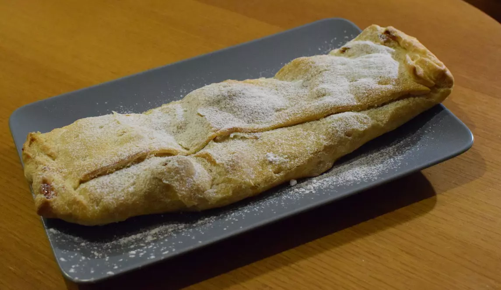

Apple Strudel

Description
Apple strudel is a traditional Viennese strudel, a popular pastry in Austria, Bavaria, the Czech Republic, Northern Italy, Slovenia, Croatia, and other countries in Europe that once belonged to the Austro-Hungarian Empire (1867–1918).
Ingredients
- Puff pastry
- 300g Apricot jam
- 3 Apples
- Ground cinnamon
- Crushed cookies
- Butter
Steps
- Peel and cut the apples in thin slices.
- Roll out the puff pastry with a rolling pin.
- Spread the jam over the puff pastry with a spoon.
- Arrange the apple slices over the jam.
- Sprinkle with cinnamon and cookies.
- Cut tiny pieces of ubtter and arrange them over the apple slices.
- Roll the puff pastry edges over, overlapping them.
- Bake for around 40 minutes at 180 degrees C (360 degrees F).